Compairing sequence and structure data
The following notebook compares the TCR:pMHC data from the collected sequences and structures to understand how representative these are of one another.
[1]:
import logomaker
import matplotlib.pyplot as plt
import networkx as nx
import numpy as np
import pandas as pd
import seaborn as sns
from matplotlib.colors import LinearSegmentedColormap
from matplotlib.patches import Patch
from pyxdameraulevenshtein import damerau_levenshtein_distance
[2]:
sequence_data = pd.read_csv('data/interim/sequences.csv')
sequence_data['type'] = 'sequence'
[3]:
structure_data = pd.read_csv('data/processed/structures_summary.csv')
structure_data['type'] = 'structure'
Select only class I for structures
[4]:
structure_data = structure_data.query("mhc_type == 'MH1'")
[5]:
tcr_pmhc_data = pd.concat([sequence_data, structure_data])
[6]:
tcr_pmhc_data.groupby('type').size()
[6]:
type
sequence 13962
structure 216
dtype: int64
Species
[7]:
fig, (ax1, ax2) = plt.subplots(1, 2, figsize=(10, 10))
species_proportions = tcr_pmhc_data.groupby('type')['species'].value_counts(normalize=True)
ax1.pie(species_proportions['sequence'], labels=species_proportions['sequence'].index, autopct='%1.1f%%')
ax1.set_title('Sequence')
ax2.pie(species_proportions['structure'], labels=species_proportions['structure'].index, autopct='%1.1f%%')
ax2.set_title('Structure')
plt.savefig('report/figures/dataset_comparison_species.svg')
plt.show()
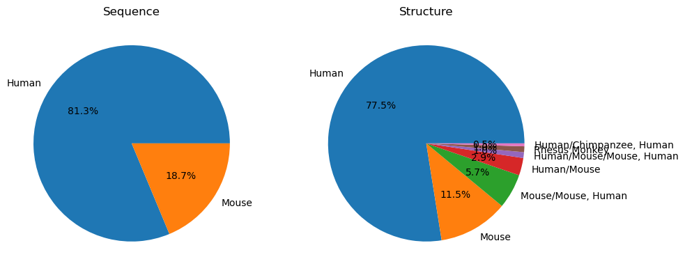
TCRs
V-Gene usage
[8]:
v_genes = tcr_pmhc_data[['v_alpha', 'v_beta', 'type']]
Removing entries with unknown genes
[9]:
v_genes = v_genes.fillna('Unknown')
[10]:
print('There are', len(v_genes[v_genes.eq('Unknown').any(axis=1)]), 'entries without gene information')
v_genes = v_genes[~v_genes.eq('Unknown').any(axis=1)]
There are 2 entries without gene information
Remove weird gene annotation
[11]:
v_genes = v_genes[~v_genes['v_alpha'].str.startswith('TRB')]
[12]:
for gene_group in 'v_alpha', 'v_beta':
v_genes[f'{gene_group}_crop'] = (
v_genes[gene_group]
.str.split('-')
.str[0]
.str.split('*')
.str[0]
.replace('[A-Z]$', '', regex=True)
.str.split(';')
.str[0]
.replace('TRAV|TRBV', '', regex=True)
)
[13]:
plt.figure(figsize=(10, 5))
v_alpha_comparison = (
v_genes.groupby('type')['v_alpha_crop']
.value_counts(normalize=True)
.reset_index()
.rename({'v_alpha_crop': 'TRAV'}, axis='columns')
.pivot_table(index='TRAV', columns='type', values='proportion')
.fillna(0.0)
)
v_alpha_comparison['gene_num'] = v_alpha_comparison.index.map(int)
v_alpha_comparison = v_alpha_comparison.sort_values('gene_num')
v_alpha_comparison['change'] = v_alpha_comparison['sequence'] - v_alpha_comparison['structure']
plt.bar(v_alpha_comparison.index, v_alpha_comparison['change'])
plt.ylabel('Comparison of the proportion of TRAV Genes\n usage between structures and sequences')
plt.xlabel('TRAV')
plt.savefig('report/figures/dataset_comparison_trav_genes.svg')
plt.show()
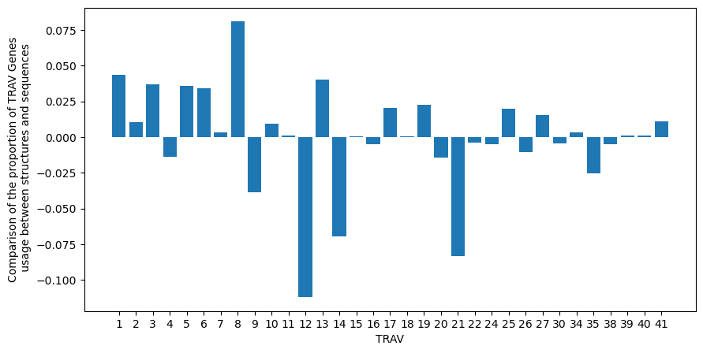
[14]:
plt.figure(figsize=(10, 5))
v_beta_comparison = (
v_genes.groupby('type')['v_beta_crop']
.value_counts(normalize=True)
.reset_index()
.rename({'v_beta_crop': 'TRBV'}, axis='columns')
.pivot_table(index='TRBV', columns='type', values='proportion')
.fillna(0.0)
)
v_beta_comparison['gene_num'] = v_beta_comparison.index.map(int)
v_beta_comparison = v_beta_comparison.sort_values('gene_num')
v_beta_comparison['change'] = v_beta_comparison['sequence'] - v_beta_comparison['structure']
plt.bar(v_beta_comparison.index, v_beta_comparison['change'])
plt.ylabel('Comparison of the proportion of TRBV Genes\n usage between structures and sequences')
plt.xlabel('TRBV')
plt.savefig('report/figures/dataset_comparison_trbv_genes.svg')
plt.show()
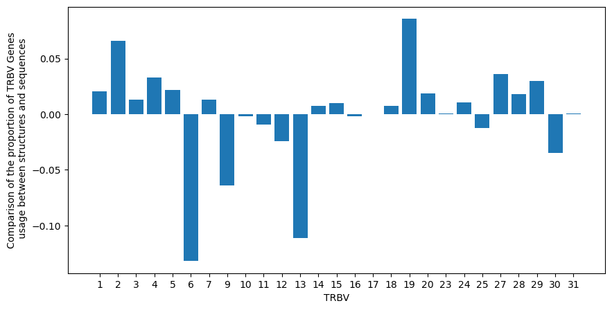
[15]:
v_gene_pairings = (
v_genes.rename({'v_alpha_crop': 'TRAV', 'v_beta_crop': 'TRBV'}, axis='columns')
.groupby('type')
.value_counts(['TRAV', 'TRBV'], normalize=True)
.reset_index()
)
[16]:
travs = sorted(v_gene_pairings['TRAV'].unique())
trbvs = sorted(v_gene_pairings['TRBV'].unique())
[17]:
fig, (ax1, ax2) = plt.subplots(1, 2, figsize=(20, 10))
v_gene_pairings_sequence = v_gene_pairings.query("type == 'sequence'").pivot_table(
index='TRAV', columns='TRBV', values='proportion'
)
v_gene_pairings_sequence[[label for label in trbvs if label not in v_gene_pairings_sequence.columns]] = np.nan
missing_table = pd.DataFrame(
np.nan,
index=pd.Series(
[label for label in travs if label not in v_gene_pairings_sequence.index],
name=v_gene_pairings_sequence.index.name,
),
columns=v_gene_pairings_sequence.columns,
)
if not missing_table.empty:
v_gene_pairings_sequence = pd.concat([v_gene_pairings_sequence, missing_table])
v_gene_pairings_sequence = v_gene_pairings_sequence[sorted(v_gene_pairings_sequence.columns, key=int)]
v_gene_pairings_sequence['key'] = v_gene_pairings_sequence.index.map(int)
v_gene_pairings_sequence = v_gene_pairings_sequence.sort_values('key', ascending=False)
v_gene_pairings_sequence = v_gene_pairings_sequence.drop('key', axis='columns')
sns.heatmap(v_gene_pairings_sequence.fillna(0), ax=ax1)
ax1.set_title('V-Gene Pairings in Sequences')
v_gene_pairings_structure = v_gene_pairings.query("type == 'structure'").pivot_table(
index='TRAV', columns='TRBV', values='proportion'
)
v_gene_pairings_structure[[label for label in trbvs if label not in v_gene_pairings_structure.columns]] = np.nan
missing_table = pd.DataFrame(
np.nan,
index=pd.Series(
[label for label in travs if label not in v_gene_pairings_structure.index],
name=v_gene_pairings_structure.index.name,
),
columns=v_gene_pairings_structure.columns,
)
if not missing_table.empty:
v_gene_pairings_structure = pd.concat([v_gene_pairings_structure, missing_table])
v_gene_pairings_structure = v_gene_pairings_structure[sorted(v_gene_pairings_structure.columns, key=int)]
v_gene_pairings_structure['key'] = v_gene_pairings_structure.index.map(int)
v_gene_pairings_structure = v_gene_pairings_structure.sort_values('key', ascending=False)
v_gene_pairings_structure = v_gene_pairings_structure.drop('key', axis='columns')
sns.heatmap(v_gene_pairings_structure.fillna(0), ax=ax2)
ax2.set_title('V-Gene Pairings in Structures')
plt.show()
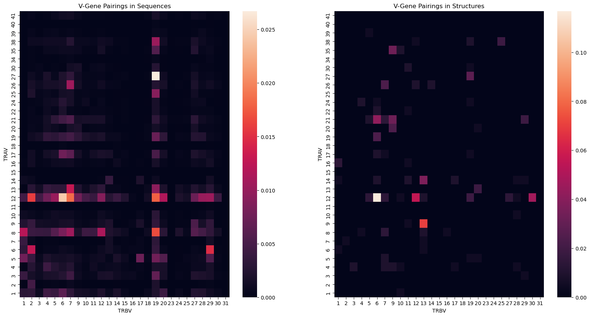
[18]:
plt.figure(figsize=(10, 10))
cmap = LinearSegmentedColormap.from_list('french_flag', ['blue', 'white', 'red'], N=256)
sns.heatmap(v_gene_pairings_structure.fillna(0) - v_gene_pairings_sequence.fillna(0), cmap=cmap, center=0)
plt.title('Comparison of V-gene pairings between structures and sequences')
plt.show()
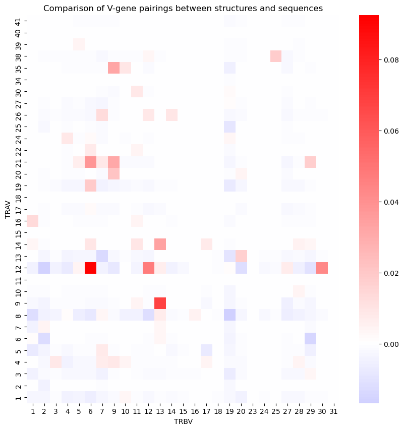
CDR lengths
[19]:
cdr_lengths = tcr_pmhc_data.filter(regex='cdr[1-3]_(alpha|beta)').map(len)
cdr_lengths['type'] = tcr_pmhc_data['type']
cdr_lengths = cdr_lengths.melt(
id_vars=['type'],
value_vars=[col for col in cdr_lengths.columns if col != 'type'],
var_name='cdr_type',
value_name='length',
)
cdr_lengths[['cdr_num', 'chain_type']] = cdr_lengths['cdr_type'].str.replace('cdr', '').str.split('_').apply(pd.Series)
cdr_lengths['cdr_num'] = cdr_lengths['cdr_num'].apply(int)
[20]:
cdr_lengths_percentages = (
cdr_lengths.groupby(['chain_type', 'cdr_num', 'type'])['length'].value_counts(normalize=True) * 100
)
cdr_lengths_percentages.name = 'percentage'
cdr_lengths_percentages = cdr_lengths_percentages.reset_index()
[21]:
grid = sns.catplot(
cdr_lengths_percentages,
x='length',
y='percentage',
row='chain_type',
col='cdr_num',
hue='type',
kind='bar',
sharex=False,
)
grid.set(ylim=(0, 100))
titles = {
(chain_type, cdr_num): f'CDR{cdr_num}$\\{chain_type}$'
for chain_type, cdr_num in cdr_lengths_percentages[['chain_type', 'cdr_num']].apply(tuple, axis='columns').unique()
}
for (chain_type, cdr_num), ax in grid.axes_dict.items():
ax.tick_params(axis='both', labelsize=14)
ax.set_title(titles[(chain_type, cdr_num)], fontsize=22, y=0.95)
for ax in grid.axes.flat:
ax.tick_params(axis='both', labelsize=14)
grid.legend.set_title('')
for label in grid.legend.texts:
label.set_text(label.get_text().title())
label.set_fontsize(16)
grid.set_axis_labels('', '')
grid.figure.suptitle('Length of CDR', x=0.5, y=0.02, fontsize=22)
grid.figure.text(-0.01, 0.5, 'Percentage (%)', va='center', fontsize=22, rotation=90)
plt.savefig('report/figures/dataset_comparison_cdr_lengths.svg')
plt.show()
cdr_lengths.groupby(['chain_type', 'cdr_num', 'type'])['length'].agg([pd.Series.mode, 'mean', 'std'])
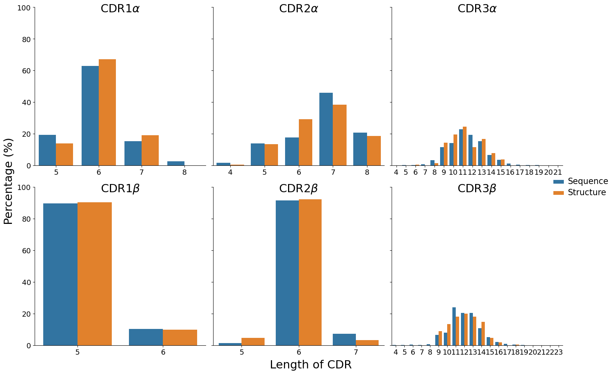
[21]:
| mode | mean | std | |||
|---|---|---|---|---|---|
| chain_type | cdr_num | type | |||
| alpha | 1 | sequence | 6 | 6.010887 | 0.669532 |
| structure | 6 | 6.050926 | 0.572387 | ||
| 2 | sequence | 7 | 6.698109 | 1.002844 | |
| structure | 7 | 6.611111 | 0.953167 | ||
| 3 | sequence | 11 | 11.418851 | 1.919230 | |
| structure | 11 | 11.287037 | 1.739024 | ||
| beta | 1 | sequence | 5 | 5.103352 | 0.304429 |
| structure | 5 | 5.097222 | 0.296948 | ||
| 2 | sequence | 6 | 6.058874 | 0.284701 | |
| structure | 6 | 5.986111 | 0.280849 | ||
| 3 | sequence | 11 | 12.063458 | 1.855996 | |
| structure | 12 | 12.004630 | 1.782336 |
Amino acid composition
[22]:
cdr_amino_acids = tcr_pmhc_data.filter(regex='cdr[1-3]_(alpha|beta)').map(list)
cdr_amino_acids['type'] = tcr_pmhc_data['type']
cdr_amino_acids = cdr_amino_acids.melt(
id_vars='type',
value_vars=[col_name for col_name in cdr_amino_acids.columns if col_name.startswith('cdr')],
var_name='cdr_type',
value_name='amino_acid',
)
cdr_amino_acids[['cdr_num', 'chain_type']] = (
cdr_amino_acids['cdr_type'].str.replace('cdr', '').str.split('_').apply(pd.Series)
)
cdr_amino_acids['cdr_num'] = cdr_amino_acids['cdr_num'].apply(int)
cdr_amino_acids = cdr_amino_acids.explode('amino_acid')
[23]:
cdr_amino_acids_proportions = cdr_amino_acids.groupby(['type', 'chain_type', 'cdr_num'])['amino_acid'].value_counts(
normalize=True
)
cdr_amino_acids_proportions = cdr_amino_acids_proportions.reset_index()
[24]:
AMINO_ACIDS = cdr_amino_acids_proportions['amino_acid'].sort_values().unique().tolist()
print(' '.join(AMINO_ACIDS))
A C D E F G H I K L M N P Q R S T V W Y
[25]:
angles = np.linspace(0, 2 * np.pi, len(AMINO_ACIDS), endpoint=False).tolist()
amino_acid_angles = dict(zip(AMINO_ACIDS, angles, strict=True))
[26]:
fig, axes = plt.subplots(
nrows=2,
ncols=3,
figsize=(15, 12),
sharey=True,
subplot_kw={'projection': 'polar'},
)
lines = []
for i, chain_type in enumerate(('alpha', 'beta')):
for j, cdr_num in enumerate((1, 2, 3)):
for type_ in 'sequence', 'structure':
selected_proportions = (
cdr_amino_acids_proportions[
(cdr_amino_acids_proportions['type'] == type_)
& (cdr_amino_acids_proportions['chain_type'] == chain_type)
& (cdr_amino_acids_proportions['cdr_num'] == cdr_num)
]
.sort_values('amino_acid')
.set_index('amino_acid')['proportion']
)
proportions = [selected_proportions.get(amino_acid, 0) for amino_acid in AMINO_ACIDS]
label_angles = [amino_acid_angles[amino_acid] for amino_acid in AMINO_ACIDS]
# Join ends
proportions.append(proportions[0])
label_angles.append(label_angles[0])
(line,) = axes[i, j].plot(label_angles, proportions, marker='o', markersize=3, label=type_)
axes[i, j].bar(label_angles, proportions, alpha=0.25, width=0.2)
lines.append(line)
axes[i, j].set_xticks(angles)
axes[i, j].set_xticklabels(AMINO_ACIDS, fontsize=14)
axes[i, j].tick_params(axis='y', labelsize=12)
axes[i, j].grid(which='major', axis='x', visible=False)
axes[i, j].set_title(f'CDR{cdr_num}$\\{chain_type}$', fontsize=22, pad=35)
unique_handles_labels = {}
for line in lines:
label = line.get_label().title()
if label not in unique_handles_labels:
unique_handles_labels[label] = line
labels, handles = zip(*unique_handles_labels.items(), strict=True)
legend = fig.legend(handles, labels, title='', fontsize=18)
fig.suptitle('Amino acid composition between sequences and structures', fontsize=24)
plt.savefig('report/figures/dataset_comparison_cdr_aa_composition.svg')
plt.show()
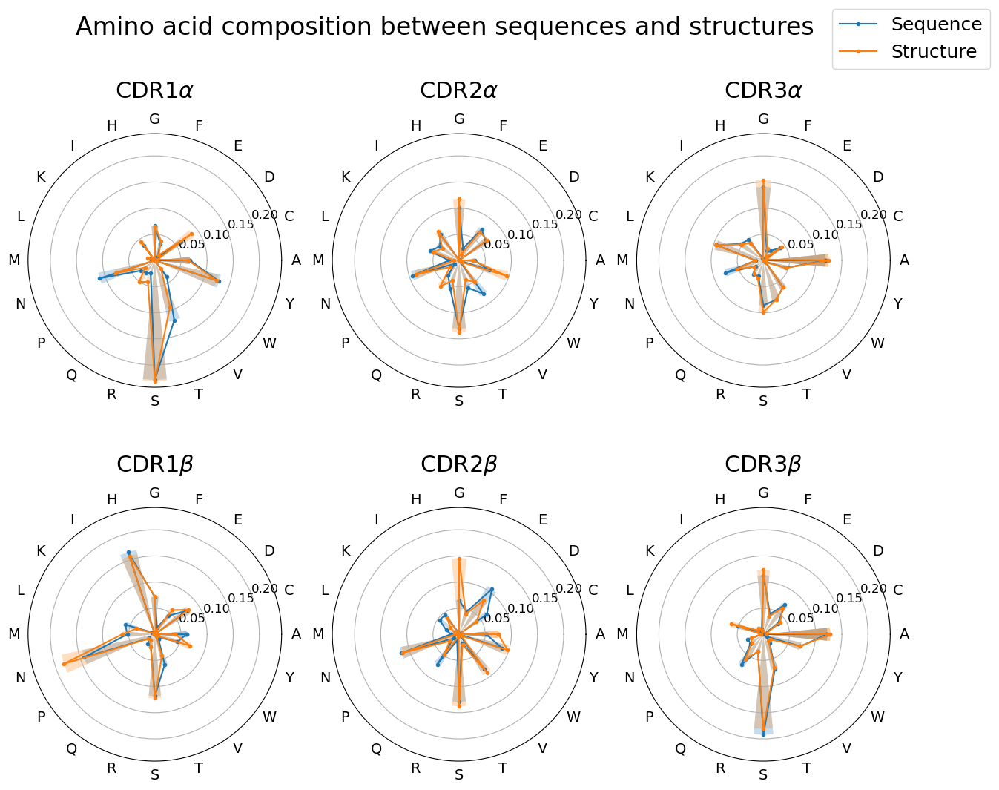
Peptides
Peptide lengths
[27]:
peptide_lengths = tcr_pmhc_data[['peptide']].map(len).rename({'peptide': 'length'}, axis='columns')
peptide_lengths['type'] = tcr_pmhc_data['type']
peptide_lengths_percentage = peptide_lengths.groupby('type')['length'].value_counts(normalize=True) * 100
peptide_lengths_percentage.name = 'percentage'
peptide_lengths_percentage = peptide_lengths_percentage.reset_index()
[28]:
max_length = peptide_lengths_percentage['length'].max()
min_length = peptide_lengths_percentage['length'].min()
expected_lengths = set(range(min_length, max_length + 1))
missing_values = pd.DataFrame()
for type_, group in peptide_lengths_percentage.groupby('type'):
missing_lengths = expected_lengths - set(group['length'].unique())
missing_values = pd.concat(
[
missing_values,
pd.DataFrame(
{
'length': list(missing_lengths),
'type': [type_ for _ in missing_lengths],
'percentage': [0.0 for _ in missing_lengths],
},
),
]
)
peptide_lengths_percentage = pd.concat([peptide_lengths_percentage, missing_values]).reset_index(drop=True)
[29]:
ax = sns.barplot(peptide_lengths_percentage.sort_values(['type', 'length']), x='length', y='percentage', hue='type')
ax.set(ylim=(0, 100))
ax.tick_params(axis='both', labelsize=12)
ax.legend_.set_title('')
for label in ax.legend_.texts:
label.set_text(label.get_text().title())
label.set_fontsize(12)
plt.xlabel('Peptide Length', fontsize=16)
plt.ylabel('Percentage (%)', fontsize=16)
plt.savefig('report/figures/dataset_comparison_peptide_lengths.svg')
plt.show()
peptide_lengths.groupby('type')['length'].agg([pd.Series.mode, 'mean', 'std'])
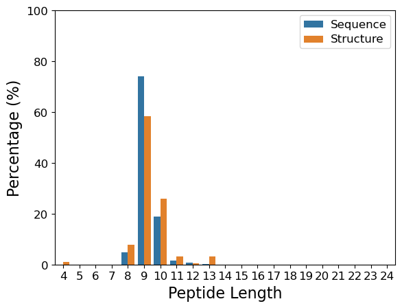
[29]:
| mode | mean | std | |
|---|---|---|---|
| type | |||
| sequence | 9 | 9.204340 | 0.616141 |
| structure | 9 | 9.342593 | 1.071075 |
Amino acid composition
[30]:
peptide_amino_acids = tcr_pmhc_data[['peptide']].map(list).rename({'peptide': 'amino_acid'}, axis='columns')
peptide_amino_acids['type'] = tcr_pmhc_data['type']
peptide_amino_acids = peptide_amino_acids.explode('amino_acid')
[31]:
peptide_amino_acids_proportions = (
peptide_amino_acids.groupby('type')['amino_acid'].value_counts(normalize=True).reset_index()
)
[32]:
fig, ax = plt.subplots(subplot_kw={'projection': 'polar'})
lines = []
for type_ in 'sequence', 'structure':
selected_proportions = (
peptide_amino_acids_proportions[peptide_amino_acids_proportions['type'] == type_]
.sort_values('amino_acid')
.set_index('amino_acid')['proportion']
)
proportions = [selected_proportions.get(amino_acid, 0) for amino_acid in AMINO_ACIDS]
label_angles = [amino_acid_angles[amino_acid] for amino_acid in AMINO_ACIDS]
# Join ends
proportions.append(proportions[0])
label_angles.append(label_angles[0])
(line,) = ax.plot(label_angles, proportions, marker='o', markersize=3, label=type_)
ax.bar(label_angles, proportions, alpha=0.25, width=0.2)
lines.append(line)
ax.set_ylim(0, 0.2)
ax.set_xticks(angles)
ax.set_xticklabels(AMINO_ACIDS, fontsize=12)
ax.tick_params(axis='y', labelsize=10)
ax.grid(which='major', axis='x', visible=False)
unique_handles_labels = {}
for line in lines:
label = line.get_label().title()
if label not in unique_handles_labels:
unique_handles_labels[label] = line
labels, handles = zip(*unique_handles_labels.items(), strict=True)
legend = fig.legend(handles, labels, title='', fontsize=12, loc='lower right')
plt.title('Peptide amino acid composition\nbetween sequences and structures', fontsize=16, pad=25)
plt.savefig('report/figures/dataset_comparison_peptide_aa_composition.svg')
plt.show()
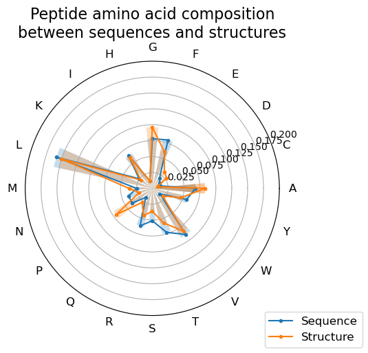
Peptide Clustering
[33]:
peptide_sequences = tcr_pmhc_data[['peptide', 'type']].drop_duplicates()
[34]:
peptide_sequences = (
peptide_sequences.groupby('peptide')['type']
.agg(lambda types: 'both' if len(types) > 1 else types.iloc[0])
.reset_index()
)
[35]:
distance_matrix = np.zeros((peptide_sequences['peptide'].shape[0], peptide_sequences['peptide'].shape[0]), dtype=int)
for i in range(peptide_sequences['peptide'].shape[0]):
for j in range(i + 1, peptide_sequences['peptide'].shape[0]):
distance_matrix[i, j] = damerau_levenshtein_distance(
peptide_sequences['peptide'].iloc[i],
peptide_sequences['peptide'].iloc[j],
)
distance_matrix = np.maximum(distance_matrix, distance_matrix.T)
print(
f'The average levenshtein distance between all peptide sequences is {np.average(distance_matrix):.2f} edits',
f'with an standard deviation of {np.std(distance_matrix):.2f} edits.',
)
The average levenshtein distance between all peptide sequences is 8.43 edits with an standard deviation of 1.31 edits.
[36]:
CUTOFF_PERCENT = 70
sequence_lengths = peptide_sequences['peptide'].str.len()
grid1, grid2 = np.meshgrid(sequence_lengths, sequence_lengths)
max_lengths = np.maximum(grid1, grid2)
sequence_percent_identities = ((max_lengths - distance_matrix) / max_lengths) * 100
similar_peptides = sequence_percent_identities > CUTOFF_PERCENT
[37]:
G = nx.Graph()
G.add_nodes_from(range(peptide_sequences['peptide'].shape[0]))
for i in range(1, len(peptide_sequences)):
for j in range(i + 1, len(peptide_sequences)):
if similar_peptides[i, j]:
G.add_edge(i, j, weight=sequence_percent_identities[i, j] / 100)
[38]:
colours = peptide_sequences['type'].map({'sequence': 'tab:blue', 'structure': 'tab:orange', 'both': 'tab:green'})
[39]:
plt.figure(figsize=(20, 15))
plt.title('Peptides grouped at 70% sequence identity', fontsize=24)
nx.draw(
G,
node_size=50,
node_color=colours.tolist(),
pos=nx.drawing.nx_agraph.graphviz_layout(G, prog='neato'),
)
legend_elements = [
Patch(facecolor='tab:blue', label='Sequence'),
Patch(facecolor='tab:orange', label='Structure'),
Patch(facecolor='tab:green', label='Both'),
]
plt.legend(handles=legend_elements, loc='upper right', fontsize=20)
plt.savefig('report/figures/dataset_comparison_peptide_clustering.svg')
plt.show()
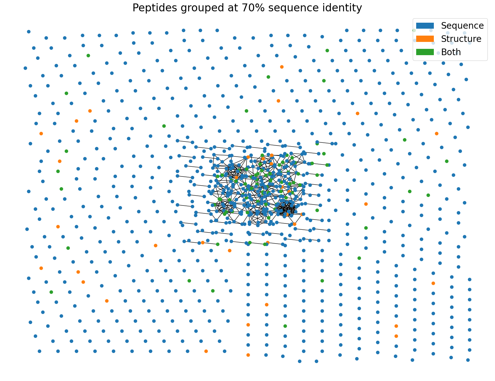
MHCs
Alleles
[40]:
mhc_alleles = tcr_pmhc_data[['mhc1', 'mhc2', 'type']].copy()
[41]:
mhc_alleles['mhc1'] = mhc_alleles['mhc1'].fillna('Unknown')
[42]:
mhc_alleles['mhc1'] = mhc_alleles['mhc1'].str.split(';')
mhc_alleles = mhc_alleles.explode('mhc1')
[43]:
mhc_alleles['mhc1'] = mhc_alleles['mhc1'].map(
lambda gene: {
'MH2-D1': 'H2-D1',
'H2-Db': 'H2-D1',
'H2-Dd': 'H2-D1',
}.get(gene, gene)
)
[44]:
mhc1_allele_proportions = (
mhc_alleles.groupby('type')['mhc1']
.value_counts(normalize=True)
.reset_index()
.rename({'mhc1': 'Allele'}, axis='columns')
.pivot_table(index='Allele', values='proportion', columns='type')
.fillna(0)
)
mhc1_allele_proportions.sort_index()
mhc1_allele_proportions['change'] = mhc1_allele_proportions['sequence'] - mhc1_allele_proportions['structure']
[45]:
mhc1_allele_proportions = mhc1_allele_proportions.loc[
[idx for idx in mhc1_allele_proportions.index if idx != 'Unknown']
]
[46]:
plt.figure(figsize=(10, 5))
plt.bar(mhc1_allele_proportions.index, mhc1_allele_proportions['change'])
plt.xticks(rotation=90)
plt.title('Proportion of alleles in sequences - structures')
plt.savefig('report/figures/dataset_comparison_mhc_genes.svg')
plt.show()
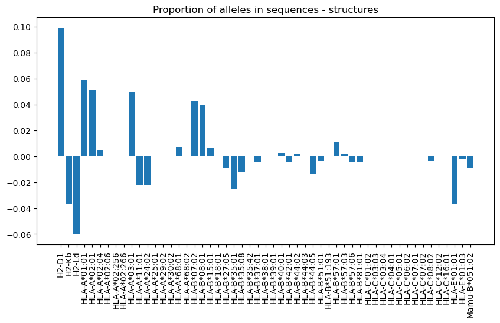
Pseudo sequences
[47]:
mhc_pseudo_sequences = tcr_pmhc_data[['mhc_pseudo', 'type']].copy()
[48]:
fig, (ax1, ax2) = plt.subplots(nrows=2, ncols=1, figsize=(20, 10))
probs = {
type_: logomaker.alignment_to_matrix(group['mhc_pseudo'], to_type='information')
for type_, group in mhc_pseudo_sequences.groupby('type')
}
y_max = max([prob.sum(axis='columns').max() for prob in probs.values()])
columns = sorted({col_name for prob in probs.values() for col_name in prob.columns})
for prob in probs.values():
for col_name in columns:
if col_name not in prob.columns:
prob[col_name] = 0.0
logomaker.Logo(probs['sequence'], color_scheme='chemistry', ax=ax1)
ax1.set_title('Sequence', fontsize=24)
ax1.set_ylabel('Bits', fontsize=20)
ax1.set_xticklabels([])
ax1.set_ylim([0, y_max])
logomaker.Logo(probs['structure'], color_scheme='chemistry', ax=ax2)
ax2.set_title('Structure', fontsize=24)
ax2.set_ylabel('Bits', fontsize=20)
ax2.set_xticklabels([])
ax2.set_ylim([0, y_max])
plt.show()
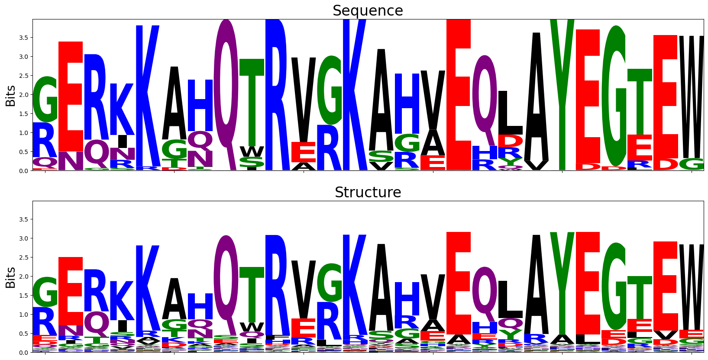
[49]:
logomaker.Logo(probs['sequence'] - probs['structure'], color_scheme='chemistry', flip_below=False)
plt.title(' Sequence - Structure', fontsize=24)
plt.ylabel('Bits', fontsize=20)
plt.xticks([])
plt.ylim((-y_max, y_max))
plt.savefig('report/figures/dataset_comparison_mhc_pseudo_sequences.svg')
plt.show()
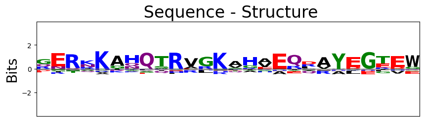